December 9, 2024
Inspired by the classic 'Journey to the West', 'Black Myth: Wukong' is the first Chinese AAA game developed by Game Science. This action RPG uniquely blends traditional Chinese aesthetics with modern gaming, offering a multidimensional lens to study cultural learning through interactive gameplay.
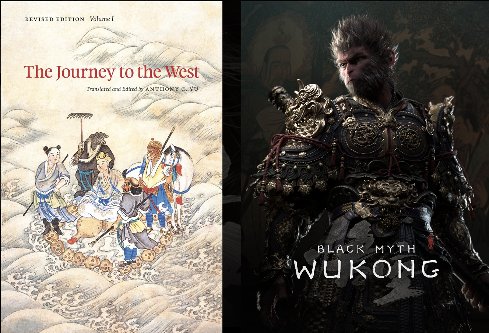
Why This Game?
'Black Myth: Wukong' not only retells Chinese mythology but does so in an interactive format that engages players deeply, making it a significant case study for understanding cultural transmission in digital media.
Impact & Players
The game quickly captured the attention of the gaming community, achieving over 2 million concurrent players on Steam. It appeals broadly to enthusiasts of action RPGs and fans of mythology, illustrating the global resonance of Chinese cultural narratives.
Black Myth: Wukong Through Constructivism
Introduction
For the Learning in the Wild site, I chose the game Black Myth: Wukong due to its significant popularity and immersive gameplay. Black Myth: Wukong is an action role-playing game that plunges players into a mythologically rich world inspired by the classic Chinese tale Journey to the West. Even before diving into the gameplay, I was aware of the substantial learning potential the game offered through its complex mechanics and narrative depth. This game stood out because of the prominence of experiential learning and its interaction with prior knowledge. This inspired me to adopt a Constructivist lens. The game environment in Black Myth: Wukong provided a compelling setting for players of varying backgrounds and ages to learn through exploration and interaction.
Methodology
During my analysis, I watched four gameplay sessions focusing on different stages of the game. These included the introduction, mid-game strategies, advanced combat techniques, and an interview with the game developers. I applied the Constructivist lens and examined how players’ behaviors and their knowledge construction evolved. Using this perspective, I formulated three research questions to investigate patterns in player behaviors.
Research Questions
- How could the game’s feedback mechanisms be designed to scaffold a constructivist approach to learning without undermining players’ sense of agency and ownership over their learning?
- How might Black Myth: Wukong’s narrative structure encourage players to engage in learning based on their prior knowledge of the Journey to the West story?
- How do emotional responses to gameplay in Black Myth: Wukong influence players’ engagement and integration of existing knowledge with new learning experiences?
Observation Process
I am analyzing the gameplay of Black Myth: Wukong through guided note-taking, focusing on specific learning interactions within the game environment. So far, I have dedicated approximately 12 hours to watching gameplay videos. During my observation, I frequently paused and replayed sections to closely observe and record details. My process of discovery is structured around targeted research questions that explore how players integrate prior knowledge with new challenges presented in the game.
Key Insights
In this memo, I will outline three key insights that directly relate to the formulated research questions. These insights capture how players leverage prior knowledge, adapt strategies, and emotionally engage with the game to construct meaningful learning experiences:
- The game's feedback mechanisms, such as rewards and in-game tips, effectively scaffold learning while maintaining a player-driven sense of discovery.
- Black Myth: Wukong’s narrative encourages players to draw from their understanding of Journey to the West, connecting story elements to gameplay strategies.
- Emotional engagement, driven by the game’s aesthetics and challenges, plays a critical role in motivating players and enhancing their ability to integrate new learning experiences.
The learning environment explored here is based on various online streaming sessions of the game "Black Myth: Wukong" on YouTube. This analysis highlights the interplay of active experimentation, scaffolding, and self-reflection as seen through constructivist theories.
Claim 1: Black Myth: Wukong’s feedback mechanisms enhanced learning by allowing players to retain control and ownership of their game experience.
The game's design fosters a learning environment where players retain control and ownership of their game experience, supporting active learning through exploration and reflection.
Example 1: Learning Through Trial and Exploration
From a YouTube video titled "Greatest Intro to A Game! Black Myth Wukong", the player ImDontai demonstrates learning through making mistakes and exploration.
Highlights include:
- Learning basic movements from tutorials (e.g., sprinting with RB).
- Experimenting with "immobilize" spells and testing attack combos.
- Discovering new mechanics like enhanced attacks via the "Focus" mechanic.
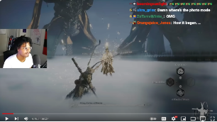
Figure 1: The player was taught the "immobilize" spell.
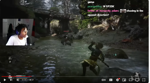
Figure 2: The player discovered how to use the healing bottle.
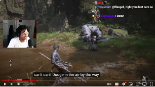
Figure 3: The player learned that dodging mid-air wasn’t possible.
Example 2: Scaffolding in Game Mechanisms
The game introduces mechanics gradually, starting with basic movements and progressing to complex abilities. This aligns with Bruner’s concept of scaffolding, where support is provided early on and removed as players become proficient.
Highlights include:
- Tutorials for basic movements setting a foundation for further skills.
- Immediate feedback through visual and audio cues, such as a distinct sound signaling a perfect dodge.
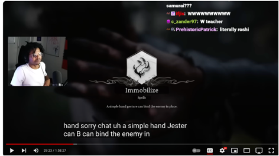
Figure 4: The spells were demonstrated in detail at first.
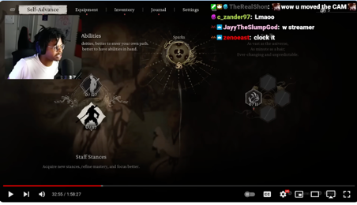
Figure 5: A Self-Advance mode was introduced based on previous knowledge.
Reflection
Reflection plays a key role in the learning process. ImDontai often paused to assess his performance, identifying areas for improvement. This self-assessment helped him adapt strategies and improve gameplay, emphasizing the importance of reflection in enhancing understanding.
Conclusion
ImDontai’s gameplay exemplifies constructivist learning principles. Active experimentation, scaffolding, and reflective thinking all contributed to his evolving mastery of "Black Myth: Wukong." The game’s design supported his learning journey, providing feedback and structure to enhance understanding.
Claim 2:Black Myth: Wukong deliberately creates knowledge gaps to scaffold players’ existing knowledge of “Journey to the West” and Chinese Culture.
Drawing from the developers' interview and gameplay observations, this analysis delves into how "Black Myth: Wukong" reinterprets cultural narratives, creating knowledge gaps that engage players and deepen their understanding.
Example 3: Reconstructing the Original Narrative
The developers deliberately reconstruct the familiar story of Journey to the West to introduce new perspectives. Voice actor Jack Ayres shared in an interview:
“I’m really glad they managed to capture...the scale and the sort of grandeur of the original Source material Journey to the West...there was a lot of pressure on the developers’ heads with getting that right.”
These comments underscore the developers' dual intent: to honor the original story while modernizing it for a global audience.
Example 4: Disgust and Confusion: Jinchi Monk’s Redesign
In a bold move, the game presents Jinchi Monk, traditionally portrayed as benevolent, in a visually unsettling manner. This reinterpretation sparked both disgust and curiosity among players familiar with Journey to the West.
In one gameplay session, ImDontai’s reaction to Jinchi Monk was notable:
The player’s immediate response highlighted the emotional impact of this drastic transformation. It raised questions about the creative decisions behind the redesign, encouraging deeper engagement with the game’s narrative choices.
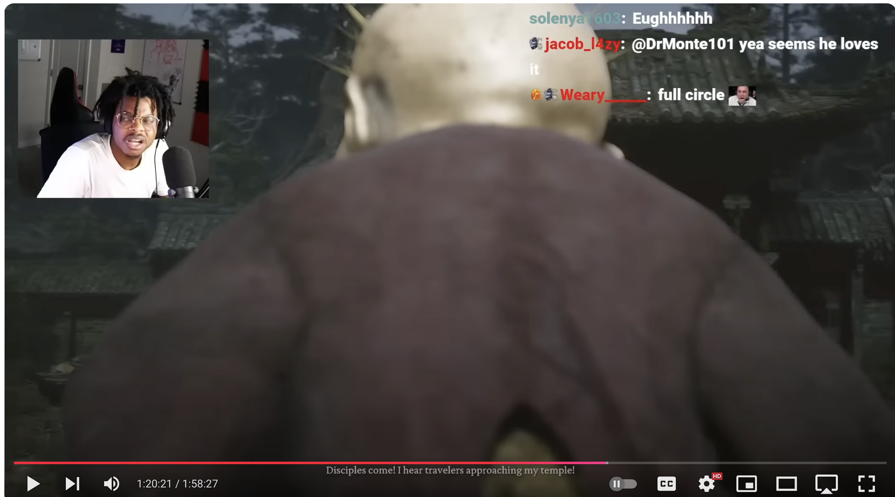
Figure 7: Player showing signs of disgust and confusion.
Example 5: Absence of the Monkey King: Sun Wukong
The game intriguingly omits Sun Wukong, the central character of Journey to the West, from visible gameplay. This absence creates a narrative puzzle, prompting players to speculate on his role.
For example, one player pondered whether the protagonist could be a descendant of Sun Wukong. This speculation reflects the developers’ success in generating a knowledge gap that stimulates player engagement and reinterpretation of the original lore.
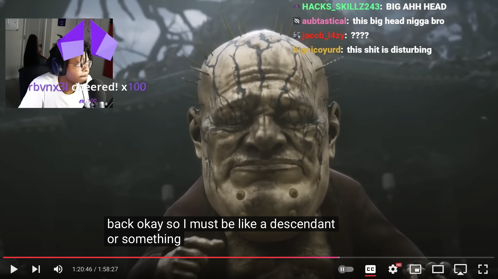
Figure 8: Player speculating on Sun Wukong’s role in the game.
Reflection and Conclusion
By actively filling in narrative gaps, players engage in a constructivist process, drawing from their knowledge of Journey to the West to interpret the game’s story. This synthesis transcends passive consumption, fostering deeper engagement with the game and its cultural source material.
Claim3: The emotional responses elicited by Black Myth: Wukong’s motivated players to actively reconcile with their existing knowledge with deeper learning and understanding of the game.
In "Black Myth: Wukong," the emotional responses elicited by character reinterpretations challenge players to integrate their existing knowledge with new insights, deepening their understanding of the game's narrative.
Example 6: Player’s Explanation of Zhu Bajie’s Story
The game’s portrayal of Zhu Bajie diverges significantly from his traditional depiction as a comedic figure. Instead, the narrative introduces layers of complexity, exploring themes of love, cosmic irony, and fate. One player summarized Zhu Bajie’s story:
“Bajie was transformed into a pig as a punishment for his greed, gluttony, and lust, particularly for coveting the moon goddess, which was forbidden. Prior to this, Bajie had fallen in love with the Spider Woman. In a tragic twist, she requested to be transformed into a pig to join him. However, due to the similarity between the Mandarin words for ‘pig’ and ‘spider,’ she was turned into a spider instead, potentially by the gods’ spiteful intervention.”
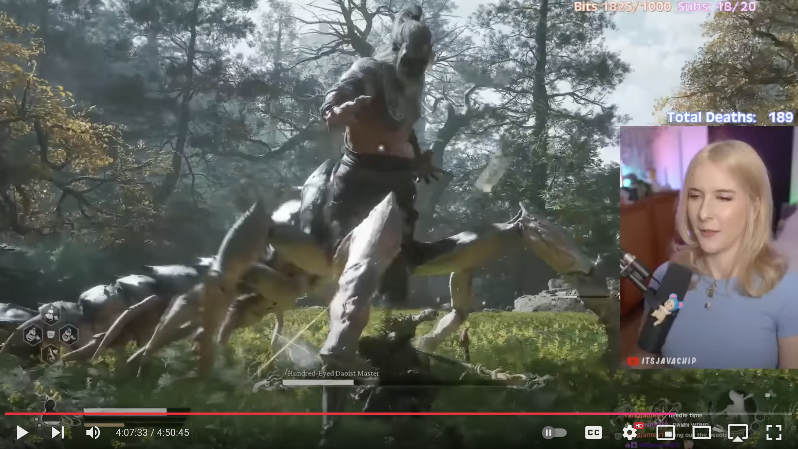
Figure 8: The “Spider Woman” as seen in the game.
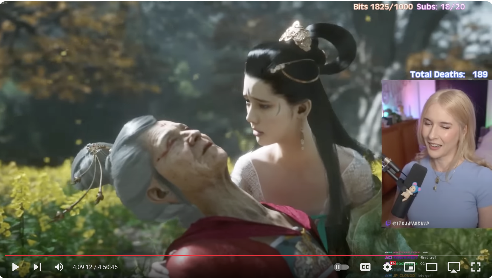
Figure 9: Player encountering a monster with spider legs.
Player’s Emotional Response
In gameplay, the player expressed surprise and cognitive dissonance upon realizing the “Spider Woman” was Bajie’s lover. This moment exemplifies how emotional engagement serves as a catalyst for deeper narrative exploration. The player connected this reinterpretation to themes of destiny and philosophical depth akin to those in "Journey to the West."
“Destiny, like a Lover’s tongue, speaks one way and means another.”
This quote from the game invites reflection on the relativity of choice and fate, reinforcing the player’s contemplation of Zhu Bajie’s narrative arc.
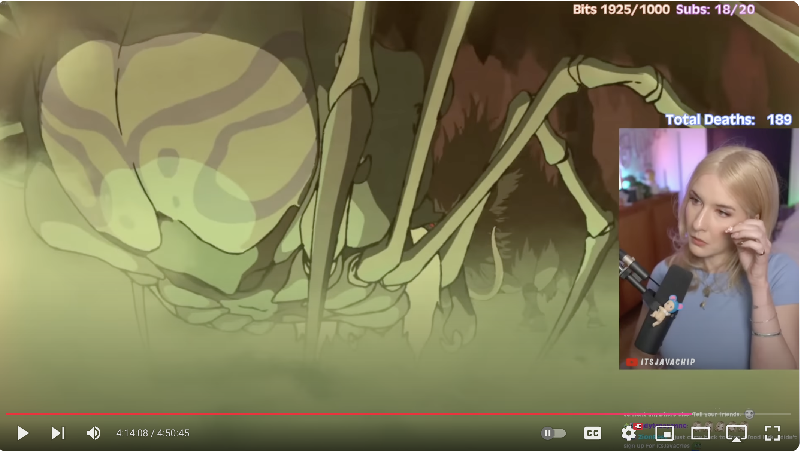
Figure 10: Emotional response after realizing the “Spider Woman” was Zhu Bajie’s lover.
Reflection and Conclusion
The player’s explanation of Zhu Bajie’s journey reflects a constructivist learning process. By integrating new knowledge with their existing understanding, they engaged in active knowledge construction. The game leveraged emotional responses to foster a deeper engagement with its narrative, prompting players to reconcile these reinterpretations with their prior beliefs.
“Bajie used to be a god that led the Heaven’s guards and was very handsome, and then he broke some rules to get transferred into a pig... so we have seen Bajie’s true form, but his philosophy and reincarnation is based on Karma.”
This interpretation showcases how "Black Myth: Wukong" transcends entertainment, creating a constructivist learning environment that encourages players to delve into its cultural and philosophical depth.